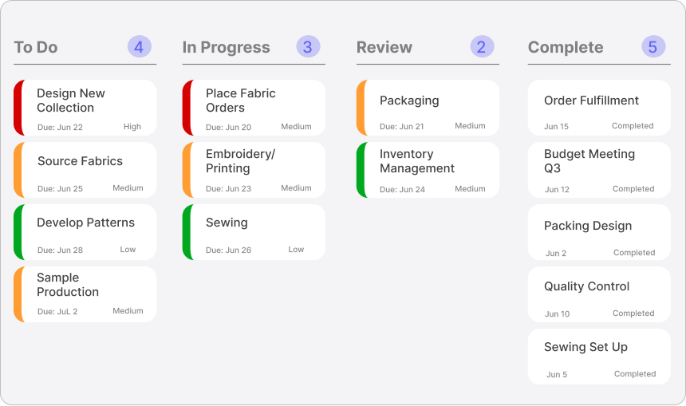
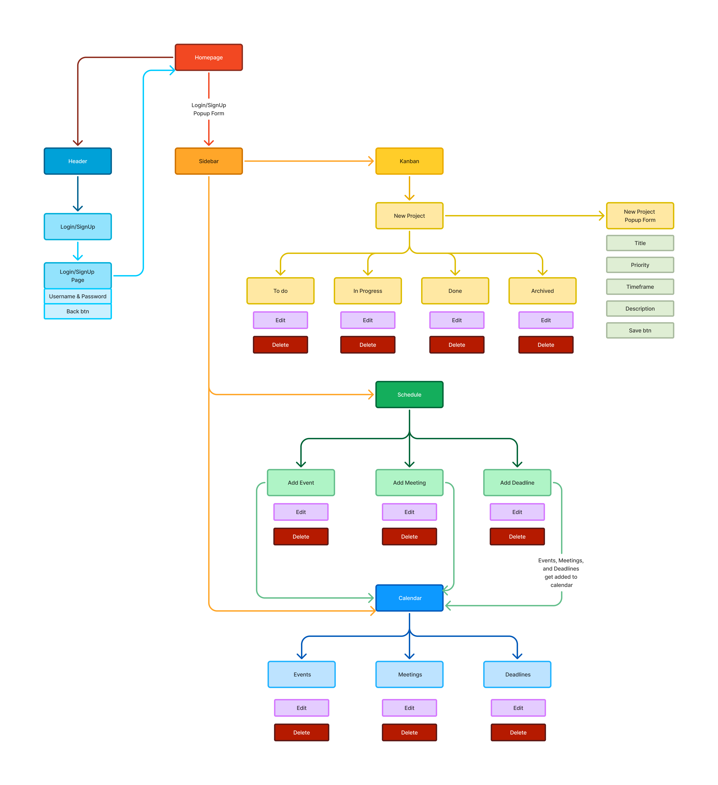
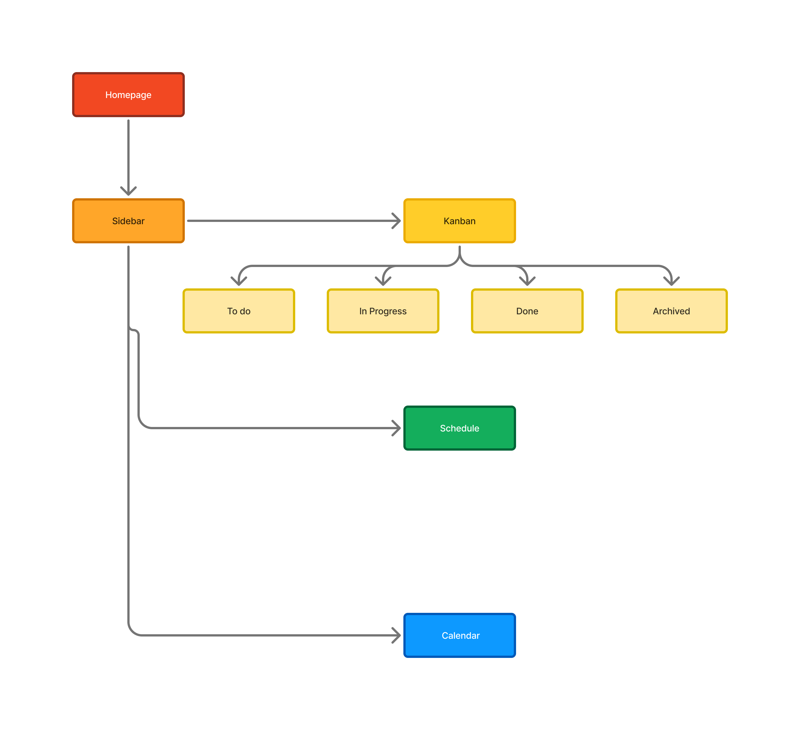
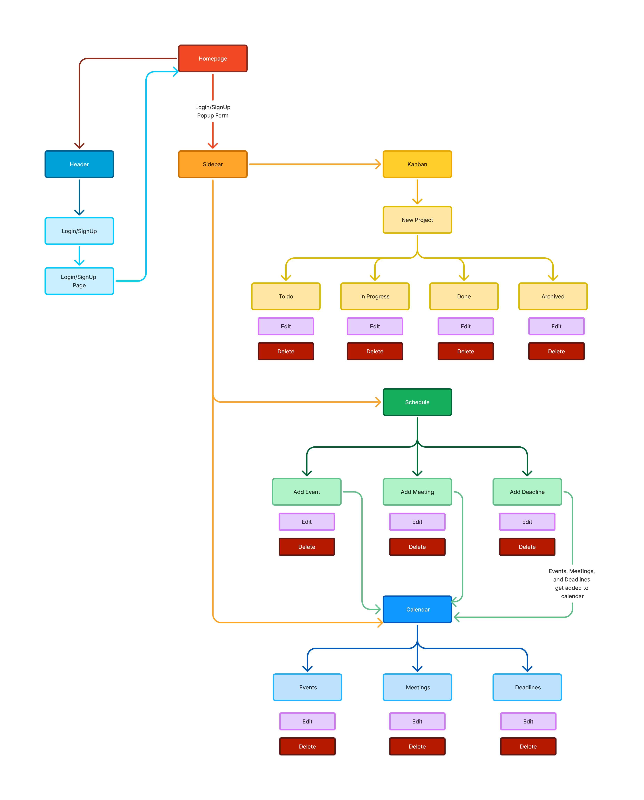
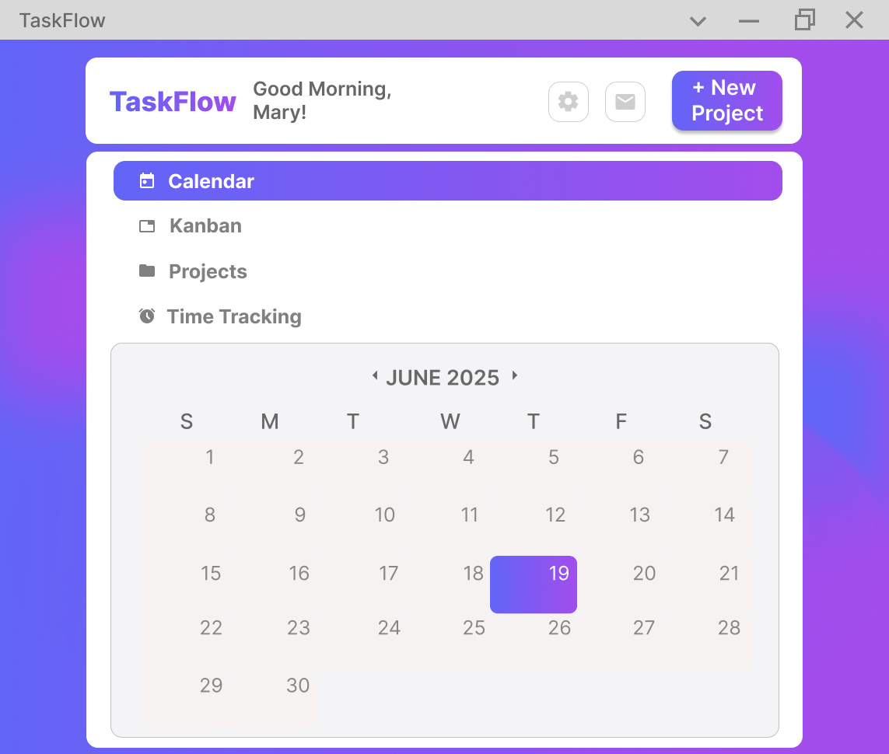
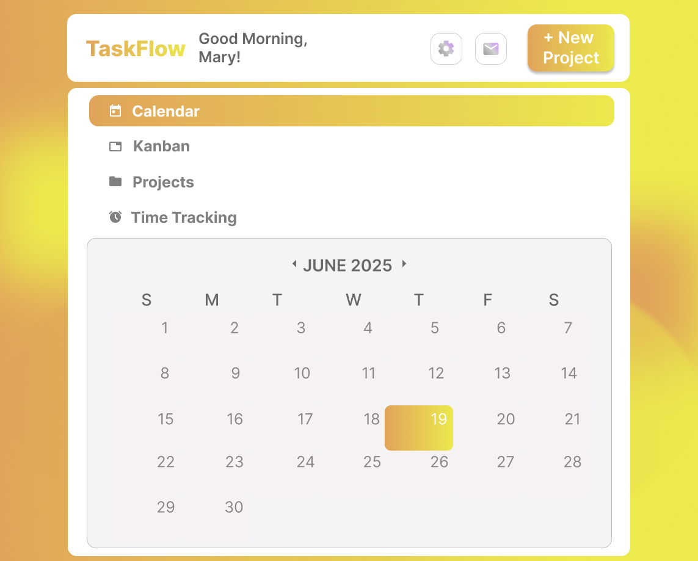
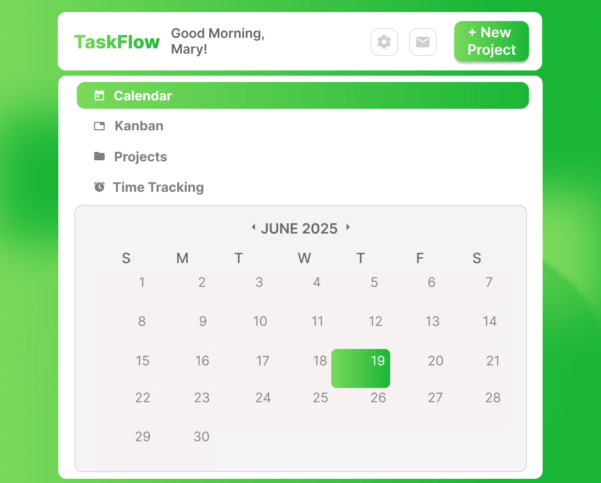
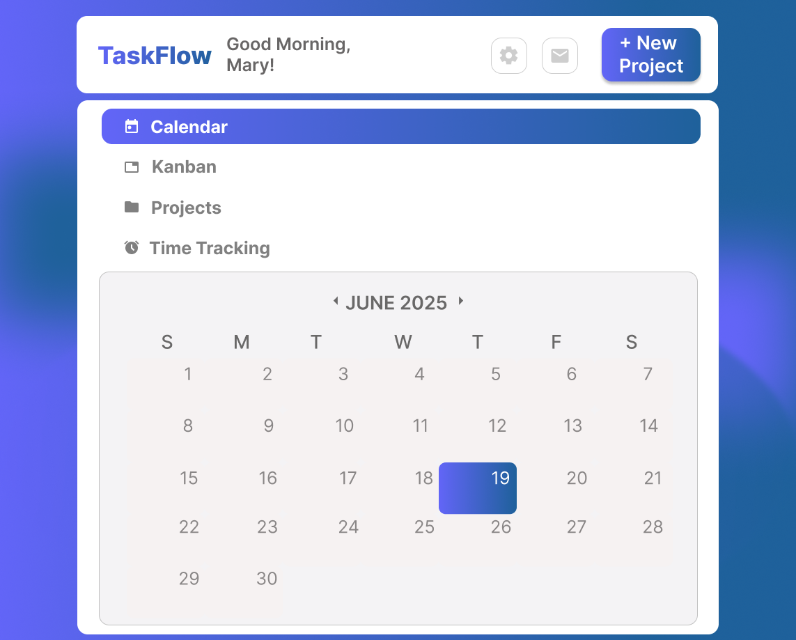
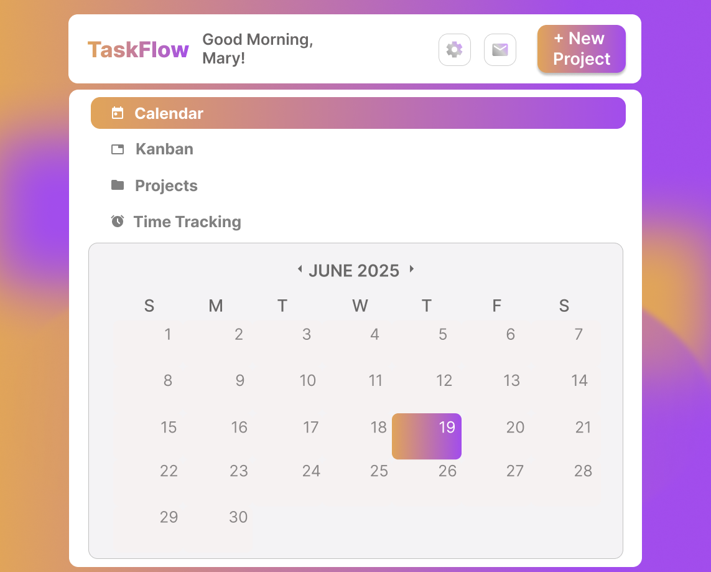

Taskflow
- Case Study
The perfect project manager for small teams
Taskflow is a streamlined project management application designed specifically for small businesses and freelancers who need powerful organizational tools without enterprise-level complexity. The app balances simplicity with scalability, allowing teams to efficiently manage workloads from initial planning through completion.Role - UI Designer (solo)
Timeframe - 168 Hours
Tool - Figma Concepts
Type - Concept Web App
The Problem
Small teams and freelancers are usually stuck choosing between two bad options: enterprise platforms like Asana or Monday that come with more configuration than a five-person team will ever use, or a patchwork of separate to-do apps, spreadsheets, and messaging tools that don't talk to each other. Taskflow's challenge was building something with enough structure to actually organize a team's work, without the setup overhead of tools built for hundreds of people.
Research
This project's research was competitive rather than user-based — I didn't run interviews or usability tests. Instead, I studied how Asana, Monday, and ClickUp structure their core flows: task boards, scheduling, and team communication, looking specifically for where they add complexity a small team doesn't need. Two patterns stood out and directly shaped the design decisions below: most platforms duplicate scheduling across a dedicated "Schedule" page and a separate calendar view, and cross-project communication is often bolted on as an afterthought rather than built into the core structure.
Goals
- 1 Reduce setup and navigation overhead compared to enterprise PM tools
- 2 Consolidate redundant surfaces (like duplicate scheduling views) that add clicks without adding value
- 3 a dedicated hub for cross-project work — messaging, files, project switching — instead of scattering it across separate pages
- 4Keep the interface legible enough for a solo freelancer, while still functional for a growing team
Key features

Visual task management system that displays project progress at a glance, from "to-do" through "completed," making it easy for individuals and small teams to track workflow
Planning the Structure
Before writing any code, I mapped Taskflow's structure across three layers — what pages exist, what content lives on each one, and what a user can actually do at every step.

Site Map
The page hierarchy — how Kanban, Projects, Time Tracking, and Scheduling branch off the homepage and sidebar.

Content Map
What content and input fields live on each page — like the Title, Priority, Timeframe, and Description fields inside the New Project form.

Interactive Map
Every actionable element — edit, delete, add — and how Events, Meetings, and Deadlines all funnel into the calendar.
Key Decisions
One calendar, not two
Asana, Monday, and ClickUp all keep scheduling on a separate page from the main calendar view — the same event data, shown twice, in two different places. Taskflow consolidates scheduling directly into the calendar component. It's one less surface for a small team to check, and one less place for a deadline to get missed because it only got added to one of the two.
A dedicated Project Hub
Removing the redundant scheduling page freed up room to prioritize something competitor apps treat as an afterthought: a single Project Hub housing messaging, file uploads, and project switching. Freelancers and small teams are usually juggling more than one project at a time — this keeps the cross-project context in one place instead of forcing users to dig through separate tabs for each project.
Letting users make it theirs
Taskflow ships with five color themes — the default purple, plus Honey, Meadow, Ocean, and Sunset — so a team's workspace doesn't look identical to everyone else's. Since small teams and freelancers often spend their whole workday in a tool like this, a low-effort way to personalize the interface felt worth the relatively small implementation cost. It's a small detail, but it's the difference between a tool that feels utilitarian and one that feels considered.

Default
Honey
Meadow
Ocean
SunsetAcross all three decisions, the throughline was clarity: clearly labeled features and a modern, minimal aesthetic that reduces cognitive load, in a modular structure that scales from solo use up to a medium-sized team without becoming cluttered.
Impact
Designed an efficient, scalable solution that provides small businesses and freelancers with enterprise-grade project management tools in an accessible, intuitive interface.
Taskflow is a working build — [note whether it's currently deployed/live, or a local build]. The decisions above are grounded in competitive analysis, not usability testing with real teams, so the natural next step would be putting the consolidated calendar and Project Hub in front of an actual freelancer or small team to see whether they reduce friction the way the research suggested, rather than assuming it from comparison alone.